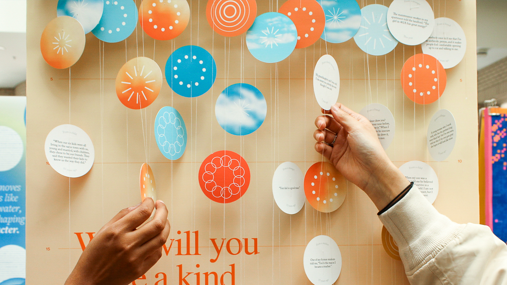
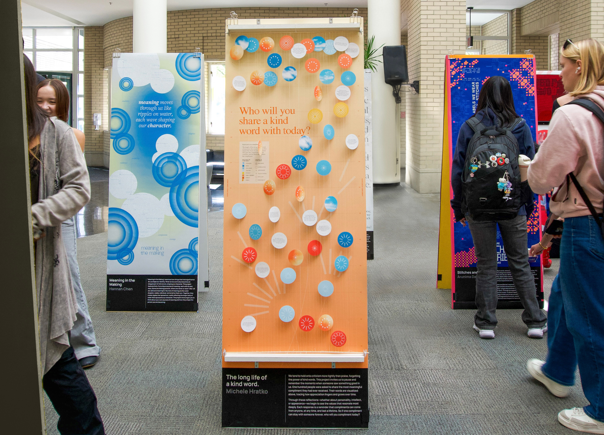
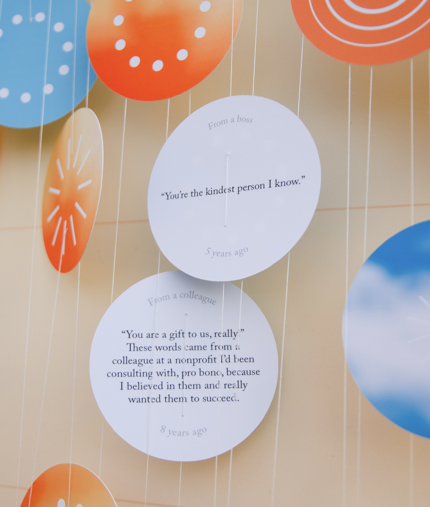
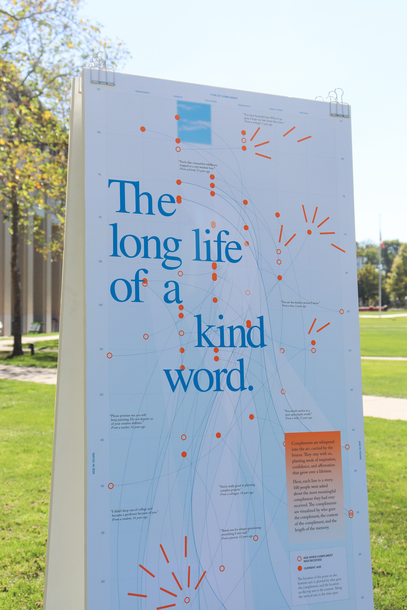
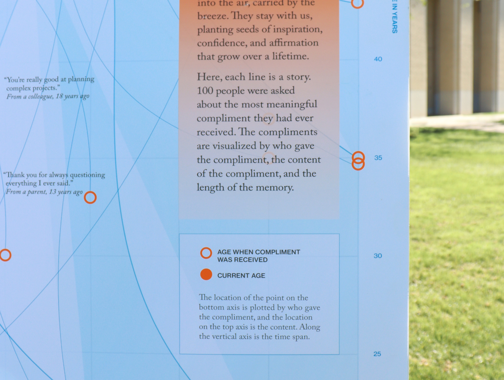
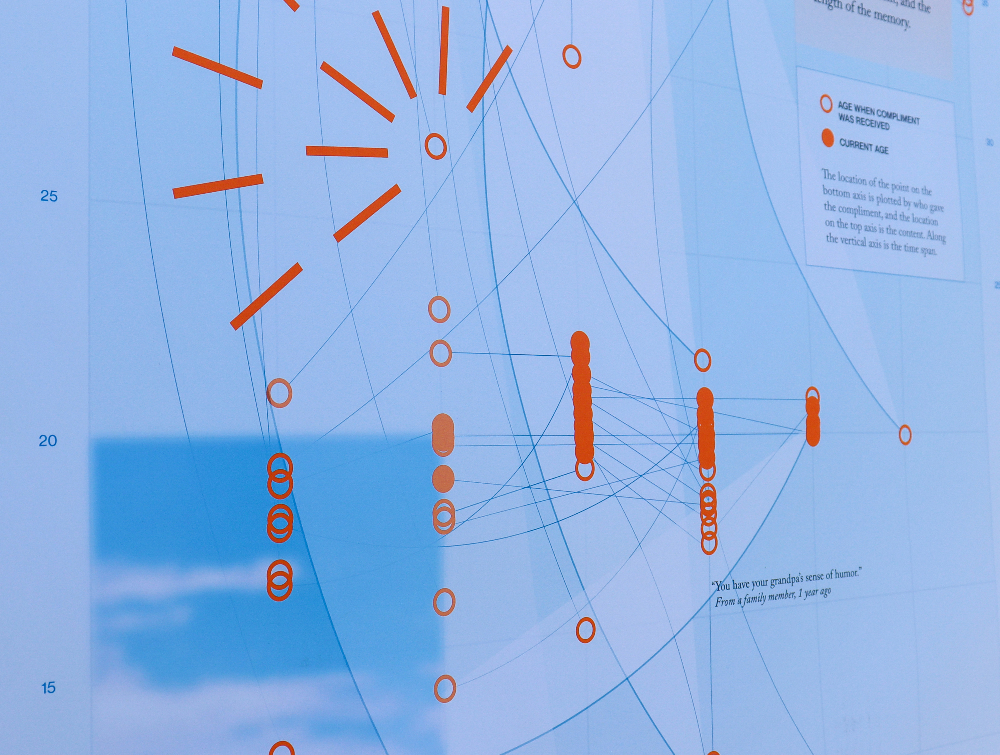
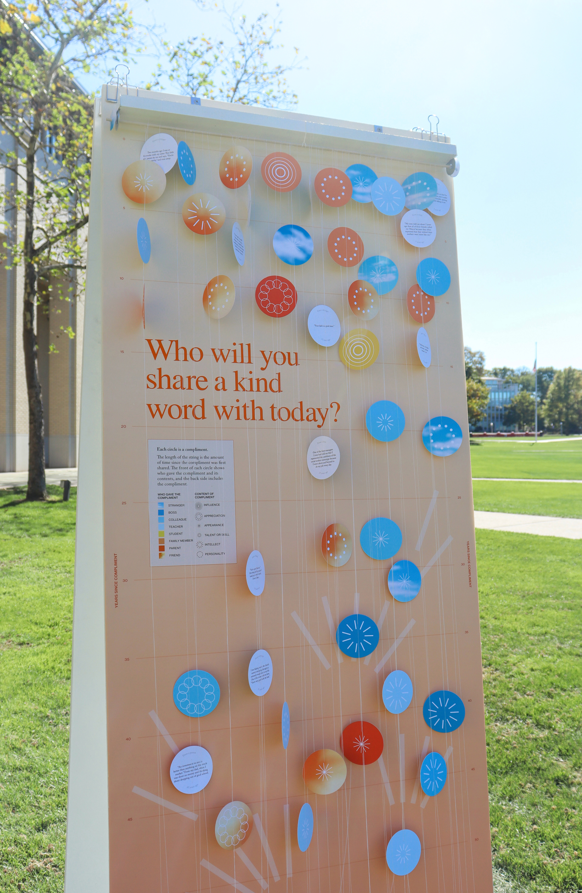
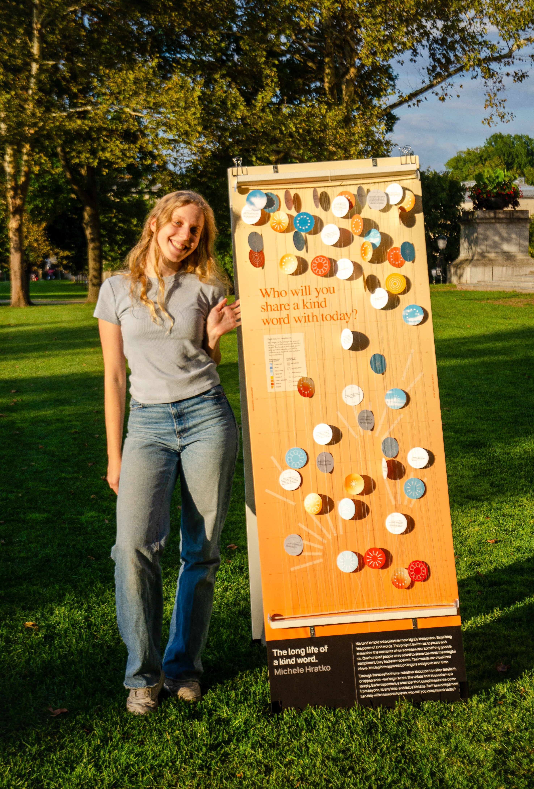
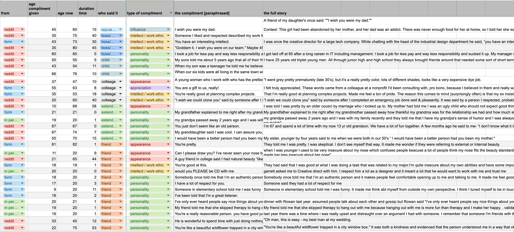

Visualizing the long life of a kind word.
We tend to hold onto criticism more tightly than praise, forgetting the power of kind words. This project invites us to pause and remember the moments when someone saw something good in us. One hundred people were asked to share the most meaningful compliment they had ever received. Their words are visualized, tracing how appreciation lingers and grows over time.
Through these reflections—whether about personality, intellect, or appearance—we begin to see the values that resonate most deeply. Each response is a reminder that compliments can come from anyone, at any time, and last a lifetime. So if one compliment can stay with someone forever, who will you compliment today?

Inspiring people to think about kindness.
This project took form as a 4-week exhibit in the Carnegie Mellon University student center. Each student designed a 2-sided A-frame as part of a larger exhibit about character.







Gathering stories from friends, family, and strangers.
I asked 100 people what the most meaningful compliment they had ever received was. I asked friends, family members, sent out a survey, and asked Reddit, to reach people of all ages and backgrounds. I analyzed their responses by who gave the compliment, the contents of the compliment, and the duration of time that had passed since the compliment was first said.
